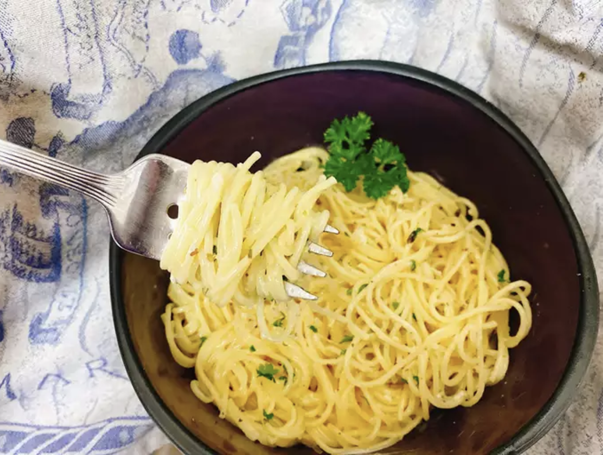

Homemade Pasta Roni

Call it a childhood craving, dorm room gourmet, or simply a grocery store
pantry staple, but homemade angel hair pasta with herbs is just as tasty
and fast to make! There's no denying the simplicity.
Ingredients
- 2 cups chicken broth
- 3 ounces angel hair pasta
- 1 tablespoon butter
- 1 clove garlic, minced
- ½ teaspoon Italian seasoning
- ¼ cup heavy cream
- ¾ cup finely shredded Parmesan cheese
- 1 teaspoon minced fresh parsley, or to taste